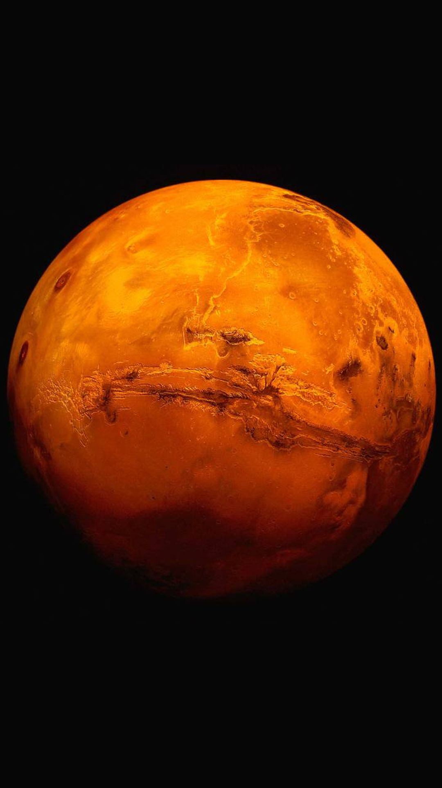

GALÁXIADenominamos galáxia a uma gigantesca acumulação de estrelas, poeiras e gás, que aparece isolada no espaço e cujos constituintes se mantêm unidos entre si devido a mútuas interações gravitacionais, sendo por vezes o seu comportamento afetado por galáxias vizinhas. Via LácteaA Via Láctea é uma faixa nebulosa que atravessa o firmamento passando por algumas constelações de estrelas como Sagitário, Escorpião ou Cassiopeia. Já teve outros nomes: na Península Ibérica foi "Estrada de Santiago" e, no Oriente, "Rio de Prata" É nesta galáxia que se encontra o nosso sistema solar. Sistema SolarMercúrioMercúrio é o planeta mais próximo ao Sol e o oitavo em tamanho no sistema solar. A distância média é de 57,9 milhões de quilômetros do Sol. É basicamente constituído por ferro, sendo chamado por Iron Planet. Pode ser visto da Terra a olho nu, contudo pouco antes do amanhecer e instantes após o anoitecer porque a sua proximidade com o Sol dificulta a observação. VénusVénus é o segundo planeta do sistema Solar mais próximo do Sol. Tem cerca de 800 milhões de anos e além do Sol e da Lua é o corpo celeste mais brilhante no céu, motivo pelo qual é conhecido desde a antiguidade. Uma curiosidade: este planeta é o mais quente do sistema solar. TerraA Terra é o único planeta no sistema solar conhecido por abrigar vida. Todas as coisas que precisamos para sobreviver são fornecidas sob uma fina camada de atmosfera que nos separa do vazio inabitável do espaço.
MarteMarte é o quarto planeta mais próximo do Sol e o segundo menor planeta do sistema solar, depois de Mercúrio, sendo consideravelmente menor que o planeta Terra. Apresenta uma coloração avermelhada, pela presença de óxido de ferro na sua superfície. Por isso, recebeu o nome de Marte, em homenagem ao deus romano da guerra. JúpiterJúpiter é o maior planeta do Sistema Solar, o quinto a partir do Sol e o quarto corpo celeste mais brilhante no céu – os demais são o Sol, a Lua e Vénus. A massa é 318 vezes superior à da Terra e maior que todos os planetas do Sistema Solar juntos. Tem cerca de 143 mil quilômetros de diâmetro no equador, o que equivale a 11 vezes mais que o diâmetro da Terra. É orbitado por 67 satélites naturais, situando-se a uma distância média de 778,3 milhões de quilômetros do Sol. SaturnoSaturno é o sexto planeta a partir do Sol, e o segundo maior do sistema solar. O primeiro é Júpiter. É conhecido pelo complexo sistema de anéis formados principalmente por gelo e poeira cósmica e possui 53 luas conhecidas e outras nove em pesquisa. O diámetro de Saturno é de 119,3 mil quilómetros e o seu volume é 755 vezes maior que a Terra. Possui uma das mais rápidas rotações do Sistema Solar de oeste para leste, demorando 10 horas e 39 minutos para dar a volta sobre si mesmo. Urano
Urano é o sétimo planeta a partir do Sol, o terceiro maior do Sistema Solar e foi o primeiro a ser encontrado por meio de um telescópio, pelo astrônomo William Herschel em 1781. Demora 84 anos terrestres para completar uma rotação ao sol. Urano é o nome do deus grego do céu. Observações mais detalhadas do planeta foram realizadas pela sonda Voyager, em 1986 e pelo telescópio Hubble. Juntamente com Neptuno, é um dos dois gigantes de gelo do céu. É formado, principalmente, por hidrogénio e hélio, sendo classificado também como planeta gasoso. NeptunoNeptuno é o oitavo planeta a partir do Sol. É um gigante gasoso, bem como Júpiter, Saturno e Urano. Está distante 4,5 mil milhões de quilómetros do Sol e demora 156 anos terrestres para completar uma órbita. Foi descoberto em 1846 e recebeu o nome do deus romano do mar. A comunidade científica denomina os planetas com nomes da mitologia greco-romana. O planeta demora 16 horas terrestres para completar o movimento de rotação – duração de um dia neptuniano. Possui 13 luas confirmadas e uma ainda aguarda a confirmação por cientistas. PlutãoQuando conhecemos Plutão como planeta, nunca o questionámos até que a comunidade científica tivesse reunido provas que, afinal, este não reunia as condições para de facto ser um planeta. Posteriormente, em 2006, a comunidade científica resolveu descrever o corpo celeste como “planeta-anão”. Esta descida de escalão ainda hoje causa debate na comunidade científica. References |